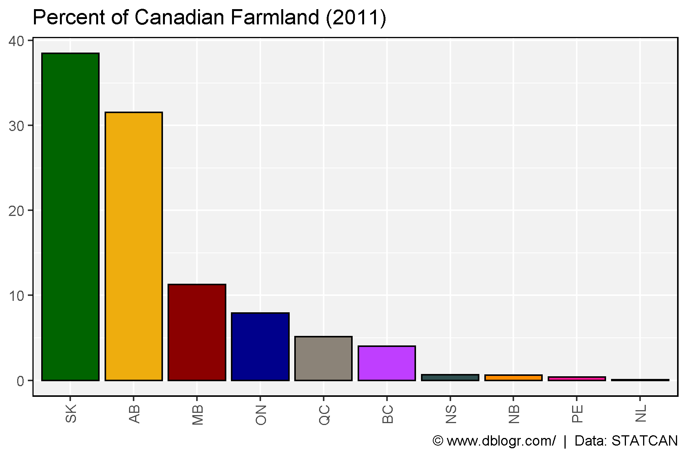
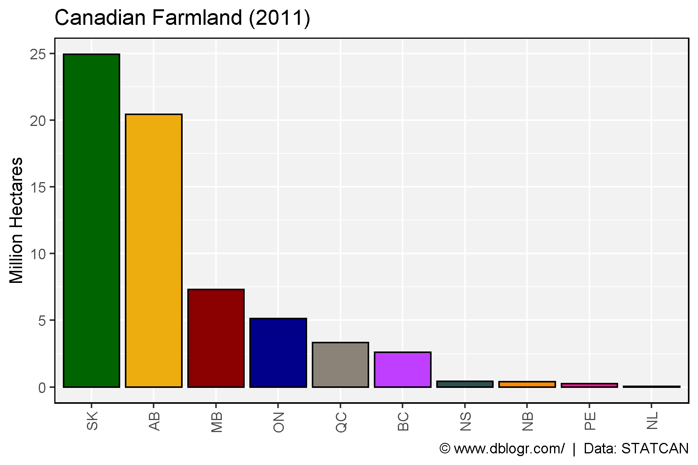
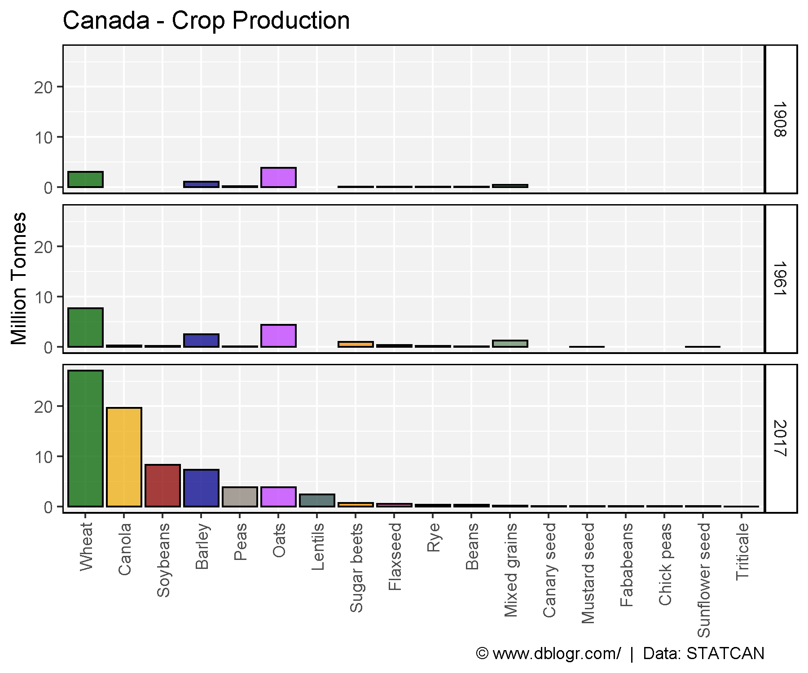
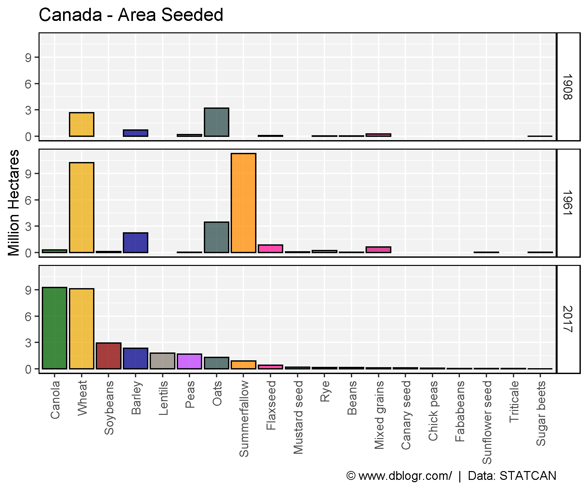

# devtools::install_github("derekmichaelwright/agData")
library(agData) # Loads: tidyverse, ggpubr, ggbeeswarm, ggrepel# Prep data
yy <- agData_STATCAN_Region_Table
xx <- agData_STATCAN_FarmUse_Land %>%
filter(Year == 2011, Item == "Total area of farms", Unit == "Hectares")
x1 <- xx %>% filter(Area == "Canada")
xx <- xx %>% filter(Area != "Canada") %>%
mutate(Percent = 100 * Value / x1$Value) %>%
arrange(Percent) %>%
mutate(Area = factor(Area, levels = rev(Area)),
Area_Short = plyr::mapvalues(Area, yy$Area, yy$Area_Short))
# Plot
mp <- ggplot(xx, aes(x = Area_Short, y = Percent, fill = Area)) +
geom_bar(stat = "identity", color = "black") +
scale_fill_manual(values = agData_Colors) +
theme_agData(legend.position = "none", rotx = T) +
labs(title = "Percent of Canadian Farmland (2011)",
caption = "\xa9 www.dblogr.com/ | Data: STATCAN",
x = NULL, y = NULL)
ggsave("crops_canada_01.png", mp, width = 6, height = 4)
# What is the total amount of farmland in Canada?
sum(xx$Value)## [1] 64812722# Plot
mp <- ggplot(xx, aes(x = Area_Short, y = Value / 1000000, fill = Area)) +
geom_bar(stat = "identity", color = "black") +
scale_fill_manual(values = agData_Colors) +
theme_agData(legend.position = "none", rotx = T) +
labs(title = "Canadian Farmland (2011)",
caption = "\xa9 www.dblogr.com/ | Data: STATCAN",
x = NULL, y = "Million Hectares")
ggsave("crops_canada_02.png", mp, width = 6, height = 4)
# Create function to determine top crops
cropList <- function(measurement) {
# Prep data
xx <- agData_STATCAN_Crops %>%
filter(Area == "Canada", Measurement == measurement, Year %in% c(1908, 1961, 2017))
# Get top 15 crops from each year
topcrops <- function(x, year) {
x <- x %>% filter(Year == year) %>% arrange(desc(Value)) %>%
pull(Crop) %>% unique() %>% as.character()
}
crops1908 <- topcrops(xx, 1908)
crops1961 <- topcrops(xx, 1961)
crops2017 <- topcrops(xx, 2017)
# Order crop list based on 2017 production
myCrops <- unique(c(crops1908, crops1961, crops2017))
xx %>% filter(Year == 2017, Crop %in% myCrops) %>%
arrange(desc(Value)) %>% pull(Crop) %>% as.character()
}# Prep data
myCrops <- cropList(measurement = "Production")
xx <- agData_STATCAN_Crops %>%
filter(Area == "Canada", Year %in% c(1908, 1961, 2017),
Measurement == "Production", Crop %in% myCrops) %>%
mutate(Crop = factor(Crop, levels = myCrops),
Crop = recode(Crop, "Beans, all dry (white and coloured)" = "Beans, all dry") )
# Plot
mp <- ggplot(xx, aes(x = Crop, y = Value / 1000000, fill = Crop)) +
geom_bar(stat = "identity", color = "Black") +
facet_grid(Year~.) +
scale_fill_manual(values = alpha(agData_Colors, 0.75)) +
theme_agData(legend.position = "none", rotx = T) +
labs(title = "Canada - Crop Production", y = "Million Tonnes", x = NULL,
caption = "\xa9 www.dblogr.com/ | Data: STATCAN")
ggsave("crops_canada_03.png", mp, width = 6, height = 5)
# Prep data
myCrops <- cropList(measurement = "Area seeded")
xx <- agData_STATCAN_Crops %>%
filter(Area == "Canada", Year %in% c(1908, 1961, 2017),
Measurement == "Area seeded", Crop %in% myCrops) %>%
mutate(Crop = factor(Crop, levels = myCrops),
Crop = recode(Crop, "Beans, all dry (white and coloured)" = "Beans, all dry") )
# Plot
mp <- ggplot(xx, aes(x = Crop, y = Value / 1000000, fill = Crop)) +
geom_bar(stat = "identity", color = "Black") +
facet_grid(Year~.) +
scale_fill_manual(values = alpha(agData_Colors, 0.75)) +
theme_agData(legend.position = "none", rotx = T) +
labs(title = "Canada - Area Seeded", y = "Million Hectares", x = NULL,
caption = "\xa9 www.dblogr.com/ | Data: STATCAN")
ggsave("crops_canada_04.png", mp, width = 6, height = 5)